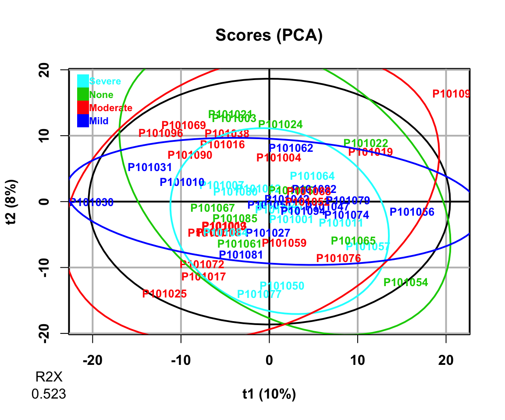
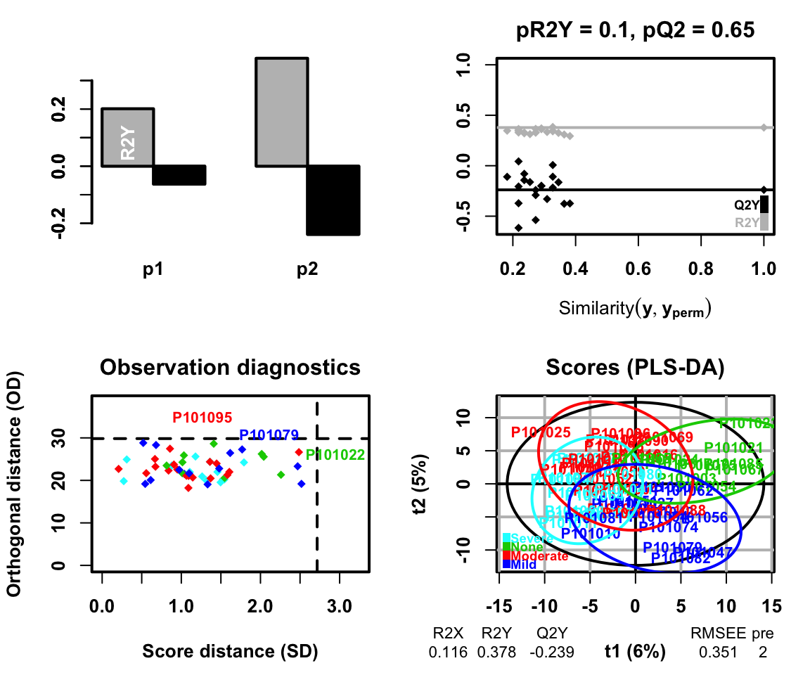
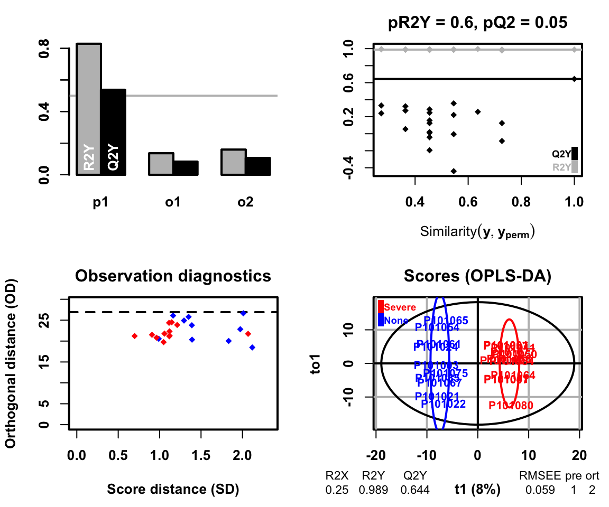
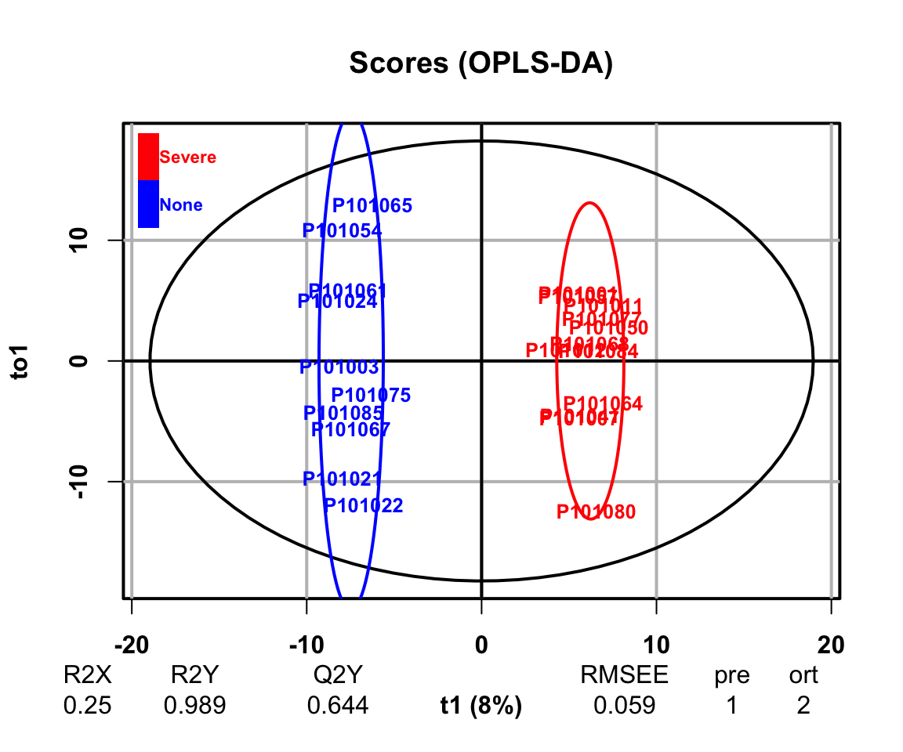

10 Dimension Reduction
降维分析是为了查看样本的差异或挖掘潜在标志物。方法有以下三种：
- 主成分分析（PCA）
主成分分析PCA（Principal Component Analysis）是一种常用的数据分析方法。PCA通过线性变换将原始数据变换为一组各维度线性无关的表示，可用于提取数据的主要特征分量，常用于高维数据的降维。
- 偏最小二乘回归分析法（PLS-DA）
偏最小二乘判别分析（PLS-DA）是一种有监督模式识别的多元统计分析方法，将多维数据在压缩前先按需要寻找的差异因素分组。
- 正交偏最小二乘判别分析（OPLS-DA）
正交偏最小二乘判别分析（OPLS-DA）结合了正交信号矫正（OSC）和PLS-DA方法，能够将X矩阵信息分解成与Y相关和不相关的两类信息，通过去除不相关的差异来筛选差异变量。
10.1 加载R包
knitr::opts_chunk$set(message = FALSE, warning = FALSE)
library(tidyverse)
library(ropls)
library(SummarizedExperiment)
library(MicrobiomeAnalysis)
# rm(list = ls())
options(stringsAsFactors = F)
options(future.globals.maxSize = 1000 * 1024^2)
grp_names <- c("None", "Mild", "Moderate", "Severe")
grp_colors <- c("#7DD06F", "#844081", "#688EC1", "#C17E73")10.2 导入数据
对数据OmicsDataSet-Zeybel et al. - 2022.xlsx处理后生成的，可参考数据预处理章节。
saveRDS(se_scale, "./InputData/result/QC/se_scale.RDS", compress = TRUE)
data_meta <- readRDS("./InputData/result/QC/se_scale.RDS")10.3 函数
DR_fun <- function(
x,
group,
group_names,
group_colors,
DRtype = c("PCA", "PLS", "OPLS"),
occ_cutoff = 0.5) {
# x = data_meta
# group = "LiverFatClass"
# group_names = grp_names
# group_colors = grp_colors
# DRtype = "PLS" # PCA
# occ_cutoff = 0.5
# dataseat
metadata <- SummarizedExperiment::colData(x) %>%
as.data.frame()
profile <- SummarizedExperiment::assay(x) %>%
as.data.frame()
colnames(metadata)[which(colnames(metadata) == group)] <- "CompVar"
phenotype <- metadata %>%
dplyr::filter(CompVar %in% group_names) %>%
dplyr::mutate(CompVar = as.character(CompVar)) %>%
dplyr::mutate(CompVar = factor(CompVar, levels = group_names))
sid <- intersect(rownames(phenotype), colnames(profile))
phen <- phenotype[pmatch(sid, rownames(phenotype)), , ]
prof <- profile %>%
dplyr::select(all_of(sid))
if (!all(colnames(prof) == rownames(phen))) {
stop("Wrong Order")
}
trim_FeatureOrSample <- function(x, nRow, threshold) {
df_occ <- apply(x, nRow, function(x) {
length(x[c(which(!is.na(x) & x!=0))]) / length(x)
}) %>%
data.frame() %>% stats::setNames("Occ") %>%
tibble::rownames_to_column("type")
if(nRow == 1){
rownames(df_occ) <- rownames(x)
}else{
rownames(df_occ) <- colnames(x)
}
df_KEEP <- apply(df_occ > threshold, 1, all) %>%
data.frame() %>% stats::setNames("Status") %>%
dplyr::filter(Status)
res <- x %>%
tibble::rownames_to_column("featureid") %>%
dplyr::filter(featureid %in% rownames(df_KEEP)) %>%
tibble::column_to_rownames("featureid")
return(res)
}
prof_cln <- trim_FeatureOrSample(prof, 1, occ_cutoff)
dataMatrix <- prof_cln %>% t() # row->sampleID; col->features
sampleMetadata <- phen %>% # row->sampleID; col->features
dplyr::mutate(CompVar = factor(CompVar, levels = group_names)) %>%
dplyr::mutate(Color = factor(CompVar,
levels = group_names,
labels = group_colors),
Color = as.character(Color))
if (DRtype == "PCA") {
fit <- opls(dataMatrix)
plot(fit,
typeVc = "x-score",
parAsColFcVn = sampleMetadata$CompVar,
)
} else if (DRtype == "PLS") {
fit <- opls(dataMatrix, sampleMetadata$CompVar, predI = 2)
plot(fit,
typeVc = "x-score",
parAsColFcVn = sampleMetadata$CompVar,
)
} else if (DRtype == "OPLS") {
# only for binary classification
fit <- opls(dataMatrix, sampleMetadata$CompVar, predI = 1, orthoI = NA)
plot(fit,
typeVc = "x-score",
parAsColFcVn = sampleMetadata$CompVar,
)
}
return(fit)
}10.4 主成分分析（PCA）
PCA_res <- DR_fun(
x = data_meta,
group = "LiverFatClass",
group_names = grp_names,
group_colors = grp_colors,
DRtype = "PCA",
occ_cutoff = 0.5)
#> PCA
#> 55 samples x 641 variables
#> standard scaling of predictors
#> R2X(cum) pre ort
#> Total 0.523 10 0
结果：PCA将原始features重新组合成新的主成分，进而形成了基于主成分的矩阵。每个主成分是由原来features的线性组合而成。
左上图: 碎石图展示不同主成分的可解释度，也即是代表全体的features，评估主成分是否足够
右上图: 离群点图，它展示的各样本在投影平面和投影平面正交的距离，数值较高样本表明它们与其他样本间的差异较大
左下图：每个样本的主成分得分（可简单理解为系数，此处只展示第一和第二主成分），该数值表示主成分能解释多少features: 该数值由features矩阵分解得到。各个样本在PC1和PC2轴的排序坐标差异，通过它们可评估样本在组成上的差异。
右下图：载荷值: 理解为构成每个主成分的features，可以认为一个主成分是由N个feature线性组合合成，每个features对该主成分的贡献程度作为loading的数值。边缘处的变量表示它们在各样本中的含量差别明显（如在某些样本中具有较大/较小的极端值等），即对排序空间的贡献较大，暗示它们可能为一些重要的代谢物。
10.5 偏最小二乘回归分析法（PLS-DA）
PLS-DA需要提供Y响应变量，它通过投影分别将预测变量（Y响应变量）和观测变量（自变量）投影到一个新空间，来寻找一个线性回归模型。通过建立组学数据与样本类别之间的关系模型，实现对样本类别的预测，为有监督的建模方式。
偏最小二乘（PLS）是一种基于预测变量和响应变量之间协方差的潜在变量回归方法，找到不同类别的分割信息最优的线性组合，PLS的每一个成分都赋予一个权值，即对应该成分的分离能力。
PLS_res <- DR_fun(
x = data_meta,
group = "LiverFatClass",
group_names = grp_names,
group_colors = grp_colors,
DRtype = "PLS",
occ_cutoff = 0.5)
#> PLS-DA
#> 55 samples x 641 variables and 1 response
#> standard scaling of predictors and response(s)
#> R2X(cum) R2Y(cum) Q2(cum) RMSEE pre ort pR2Y pQ2
#> Total 0.116 0.378 -0.239 0.351 2 0 0.1 0.65
结果：R2X和R2Y分别表示所建模型对X和Y矩阵的解释率，Q2标示模型的预测能力，它们的值越接近于1表明模型的拟合度越好，训练集的样本越能够被准确划分到其原始归属中。
左上图: 展示了2个正交轴的R2Y和Q2Y
右上图: PLS-DA模型的R2Y和Q2Y与随机置换数据后获得的相应值进行比较
左下图：展示了各样本在投影平面内以及正交投影面的距离，具有高值的样本标注出名称，表明它们与其它样本间的差异较大。颜色代表性别分组。
右下图：各样本在PLS-DA轴中的坐标，颜色代表不同分组。我们可以看到，相对于上文的PCA（仅通过方差特征值分解），PLS-DA在区分组间差异时更有效（带监督的偏最小二乘判别分析）。图的下方还提供了R2X、R2Y等值，用于评估模型优度。
此外，还可通过变量投影重要度（Variable Importance for the Projection，VIP）衡量各代谢物组分含量对样本分类判别的影响强度和解释能力，辅助标志代谢物的筛选。通常以VIP > 1作为筛选标准。
10.6 正交偏最小二乘判别分析（OPLS-DA）
PLS-DA容易出现过拟合（overfitting）问题。所谓过拟合，即通过训练集建立了一个预测模型，它在训练集上表现出色，但通过测试集测试时却表现不佳。过拟合是机器学习中的一个常见问题，主要出现在具有比样本数量更多的变量数量的数据集的分析中。主要是因为PLS-DA是有监督的预测模型且偏向训练数据。
相比PLS-DA，叠加了正交分解的OPLS-DA能更好地避免过拟合现象，这是因为它会通过将与X和Y正交的变量删除，避免不差异的变量影响结果。OPLS从给定的自变量数据集中移除正交变量，并把这些正交变量和非正交变量区分开来。然后再对非正交变量做偏最小二乘法获得载荷矩阵也即是在Y情况下的最大方差。
- None vs Severe
DR_fun(
x = data_meta,
group = "LiverFatClass",
group_names = grp_names[c(1, 4)],
group_colors = grp_colors[c(1, 4)],
DRtype = "OPLS",
occ_cutoff = 0.5)
#> OPLS-DA
#> 22 samples x 641 variables and 1 response
#> standard scaling of predictors and response(s)
#> R2X(cum) R2Y(cum) Q2(cum) RMSEE pre ort pR2Y pQ2
#> Total 0.25 0.989 0.644 0.059 1 2 0.6 0.05
#> OPLS-DA
#> 22 samples x 641 variables and 1 response
#> standard scaling of predictors and response(s)
#> R2X(cum) R2Y(cum) Q2(cum) RMSEE pre ort pR2Y pQ2
#> Total 0.25 0.989 0.644 0.059 1 2 0.6 0.05结果和PLS-DA一致。
左上图: 展示了2个正交轴的R2Y和Q2Y
右上图: PLS-DA模型的R2Y和Q2Y与随机置换数据后获得的相应值进行比较
左下图：展示了各样本在投影平面内以及正交投影面的距离，具有高值的样本标注出名称，表明它们与其它样本间的差异较大。颜色代表性别分组。
右下图：各样本在PLS-DA轴中的坐标，颜色代表不同分组。我们可以看到，相对于上文的PCA（仅通过方差特征值分解），PLS-DA在区分组间差异时更有效（带监督的偏最小二乘判别分析）。图的下方还提供了R2X、R2Y等值，用于评估模型优度。
10.7 Session info
devtools::session_info()
#> ─ Session info ───────────────────────────────────────────
#> setting value
#> version R version 4.3.1 (2023-06-16)
#> os macOS Monterey 12.2.1
#> system x86_64, darwin20
#> ui X11
#> language (EN)
#> collate en_US.UTF-8
#> ctype en_US.UTF-8
#> tz Asia/Shanghai
#> date 2024-02-06
#> pandoc 3.1.3 @ /Users/zouhua/opt/anaconda3/bin/ (via rmarkdown)
#>
#> ─ Packages ───────────────────────────────────────────────
#> package * version date (UTC) lib source
#> abind 1.4-5 2016-07-21 [1] CRAN (R 4.3.0)
#> ade4 1.7-22 2023-02-06 [1] CRAN (R 4.3.0)
#> ANCOMBC 2.4.0 2023-10-24 [1] Bioconductor
#> ape 5.7-1 2023-03-13 [1] CRAN (R 4.3.0)
#> backports 1.4.1 2021-12-13 [1] CRAN (R 4.3.0)
#> base64enc 0.1-3 2015-07-28 [1] CRAN (R 4.3.0)
#> beachmat 2.18.0 2023-10-24 [1] Bioconductor
#> beeswarm 0.4.0 2021-06-01 [1] CRAN (R 4.3.0)
#> Biobase * 2.62.0 2023-10-24 [1] Bioconductor
#> BiocGenerics * 0.48.1 2023-11-01 [1] Bioconductor
#> BiocNeighbors 1.20.2 2024-01-07 [1] Bioconductor 3.18 (R 4.3.2)
#> BiocParallel 1.36.0 2023-10-24 [1] Bioconductor
#> BiocSingular 1.18.0 2023-10-24 [1] Bioconductor
#> biomformat 1.30.0 2023-10-24 [1] Bioconductor
#> Biostrings 2.70.2 2024-01-28 [1] Bioconductor 3.18 (R 4.3.2)
#> bit 4.0.5 2022-11-15 [1] CRAN (R 4.3.0)
#> bit64 4.0.5 2020-08-30 [1] CRAN (R 4.3.0)
#> bitops 1.0-7 2021-04-24 [1] CRAN (R 4.3.0)
#> blob 1.2.4 2023-03-17 [1] CRAN (R 4.3.0)
#> bluster 1.12.0 2023-10-24 [1] Bioconductor
#> bookdown 0.37 2023-12-01 [1] CRAN (R 4.3.0)
#> boot 1.3-28.1 2022-11-22 [1] CRAN (R 4.3.1)
#> bslib 0.6.1 2023-11-28 [1] CRAN (R 4.3.0)
#> cachem 1.0.8 2023-05-01 [1] CRAN (R 4.3.0)
#> calibrate 1.7.7 2020-06-19 [1] CRAN (R 4.3.0)
#> caTools 1.18.2 2021-03-28 [1] CRAN (R 4.3.0)
#> cellranger 1.1.0 2016-07-27 [1] CRAN (R 4.3.0)
#> checkmate 2.3.1 2023-12-04 [1] CRAN (R 4.3.0)
#> class 7.3-22 2023-05-03 [1] CRAN (R 4.3.1)
#> cli 3.6.2 2023-12-11 [1] CRAN (R 4.3.0)
#> cluster 2.1.4 2022-08-22 [1] CRAN (R 4.3.1)
#> codetools 0.2-19 2023-02-01 [1] CRAN (R 4.3.1)
#> colorspace 2.1-0 2023-01-23 [1] CRAN (R 4.3.0)
#> crayon 1.5.2 2022-09-29 [1] CRAN (R 4.3.0)
#> CVXR 1.0-12 2024-02-02 [1] CRAN (R 4.3.2)
#> data.table 1.15.0 2024-01-30 [1] CRAN (R 4.3.2)
#> DBI 1.2.1 2024-01-12 [1] CRAN (R 4.3.0)
#> DECIPHER 2.30.0 2023-10-24 [1] Bioconductor
#> decontam 1.22.0 2023-10-24 [1] Bioconductor
#> DelayedArray 0.28.0 2023-10-24 [1] Bioconductor
#> DelayedMatrixStats 1.24.0 2023-10-24 [1] Bioconductor
#> DescTools 0.99.54 2024-02-03 [1] CRAN (R 4.3.2)
#> DESeq2 1.42.0 2023-10-24 [1] Bioconductor
#> devtools 2.4.5 2022-10-11 [1] CRAN (R 4.3.0)
#> digest 0.6.34 2024-01-11 [1] CRAN (R 4.3.0)
#> DirichletMultinomial 1.44.0 2023-10-24 [1] Bioconductor
#> doParallel 1.0.17 2022-02-07 [1] CRAN (R 4.3.0)
#> doRNG 1.8.6 2023-01-16 [1] CRAN (R 4.3.0)
#> downlit 0.4.3 2023-06-29 [1] CRAN (R 4.3.0)
#> dplyr * 1.1.4 2023-11-17 [1] CRAN (R 4.3.0)
#> e1071 1.7-14 2023-12-06 [1] CRAN (R 4.3.0)
#> ellipsis 0.3.2 2021-04-29 [1] CRAN (R 4.3.0)
#> energy 1.7-11 2022-12-22 [1] CRAN (R 4.3.0)
#> evaluate 0.23 2023-11-01 [1] CRAN (R 4.3.0)
#> Exact 3.2 2022-09-25 [1] CRAN (R 4.3.0)
#> expm 0.999-9 2024-01-11 [1] CRAN (R 4.3.0)
#> fansi 1.0.6 2023-12-08 [1] CRAN (R 4.3.0)
#> fastmap 1.1.1 2023-02-24 [1] CRAN (R 4.3.0)
#> forcats * 1.0.0 2023-01-29 [1] CRAN (R 4.3.0)
#> foreach 1.5.2 2022-02-02 [1] CRAN (R 4.3.0)
#> foreign 0.8-84 2022-12-06 [1] CRAN (R 4.3.1)
#> Formula 1.2-5 2023-02-24 [1] CRAN (R 4.3.0)
#> fs 1.6.3 2023-07-20 [1] CRAN (R 4.3.0)
#> generics 0.1.3 2022-07-05 [1] CRAN (R 4.3.0)
#> GenomeInfoDb * 1.38.5 2023-12-28 [1] Bioconductor 3.18 (R 4.3.2)
#> GenomeInfoDbData 1.2.11 2024-01-24 [1] Bioconductor
#> GenomicRanges * 1.54.1 2023-10-29 [1] Bioconductor
#> ggbeeswarm 0.7.2 2023-04-29 [1] CRAN (R 4.3.0)
#> ggplot2 * 3.4.4 2023-10-12 [1] CRAN (R 4.3.0)
#> ggrepel 0.9.5 2024-01-10 [1] CRAN (R 4.3.0)
#> gld 2.6.6 2022-10-23 [1] CRAN (R 4.3.0)
#> glmnet 4.1-8 2023-08-22 [1] CRAN (R 4.3.0)
#> glue 1.7.0 2024-01-09 [1] CRAN (R 4.3.0)
#> gmp 0.7-4 2024-01-15 [1] CRAN (R 4.3.0)
#> gplots 3.1.3.1 2024-02-02 [1] CRAN (R 4.3.2)
#> gridExtra 2.3 2017-09-09 [1] CRAN (R 4.3.0)
#> gsl 2.1-8 2023-01-24 [1] CRAN (R 4.3.0)
#> gtable 0.3.4 2023-08-21 [1] CRAN (R 4.3.0)
#> gtools 3.9.5 2023-11-20 [1] CRAN (R 4.3.0)
#> highr 0.10 2022-12-22 [1] CRAN (R 4.3.0)
#> Hmisc 5.1-1 2023-09-12 [1] CRAN (R 4.3.0)
#> hms 1.1.3 2023-03-21 [1] CRAN (R 4.3.0)
#> htmlTable 2.4.2 2023-10-29 [1] CRAN (R 4.3.0)
#> htmltools 0.5.7 2023-11-03 [1] CRAN (R 4.3.0)
#> htmlwidgets 1.6.4 2023-12-06 [1] CRAN (R 4.3.0)
#> httpuv 1.6.14 2024-01-26 [1] CRAN (R 4.3.2)
#> httr 1.4.7 2023-08-15 [1] CRAN (R 4.3.0)
#> igraph 2.0.1.1 2024-01-30 [1] CRAN (R 4.3.2)
#> IRanges * 2.36.0 2023-10-24 [1] Bioconductor
#> irlba 2.3.5.1 2022-10-03 [1] CRAN (R 4.3.0)
#> iterators 1.0.14 2022-02-05 [1] CRAN (R 4.3.0)
#> jquerylib 0.1.4 2021-04-26 [1] CRAN (R 4.3.0)
#> jsonlite 1.8.8 2023-12-04 [1] CRAN (R 4.3.0)
#> KernSmooth 2.23-21 2023-05-03 [1] CRAN (R 4.3.1)
#> knitr 1.45 2023-10-30 [1] CRAN (R 4.3.0)
#> later 1.3.2 2023-12-06 [1] CRAN (R 4.3.0)
#> lattice 0.21-8 2023-04-05 [1] CRAN (R 4.3.1)
#> lazyeval 0.2.2 2019-03-15 [1] CRAN (R 4.3.0)
#> lifecycle 1.0.4 2023-11-07 [1] CRAN (R 4.3.0)
#> limma 3.58.1 2023-10-31 [1] Bioconductor
#> lme4 1.1-35.1 2023-11-05 [1] CRAN (R 4.3.0)
#> lmerTest 3.1-3 2020-10-23 [1] CRAN (R 4.3.0)
#> lmom 3.0 2023-08-29 [1] CRAN (R 4.3.0)
#> locfit 1.5-9.8 2023-06-11 [1] CRAN (R 4.3.0)
#> lubridate * 1.9.3 2023-09-27 [1] CRAN (R 4.3.0)
#> magrittr 2.0.3 2022-03-30 [1] CRAN (R 4.3.0)
#> MASS 7.3-60 2023-05-04 [1] CRAN (R 4.3.1)
#> Matrix 1.6-5 2024-01-11 [1] CRAN (R 4.3.0)
#> MatrixGenerics * 1.14.0 2023-10-24 [1] Bioconductor
#> matrixStats * 1.2.0 2023-12-11 [1] CRAN (R 4.3.0)
#> memoise 2.0.1 2021-11-26 [1] CRAN (R 4.3.0)
#> metagenomeSeq 1.43.0 2023-04-25 [1] Bioconductor
#> mgcv 1.8-42 2023-03-02 [1] CRAN (R 4.3.1)
#> mia 1.10.0 2023-10-24 [1] Bioconductor
#> MicrobiomeAnalysis * 1.0.3 2024-02-06 [1] Github (HuaZou/MicrobiomeAnalysis@fd2a6a2)
#> mime 0.12 2021-09-28 [1] CRAN (R 4.3.0)
#> miniUI 0.1.1.1 2018-05-18 [1] CRAN (R 4.3.0)
#> minqa 1.2.6 2023-09-11 [1] CRAN (R 4.3.0)
#> multcomp 1.4-25 2023-06-20 [1] CRAN (R 4.3.0)
#> MultiAssayExperiment 1.28.0 2023-10-24 [1] Bioconductor
#> MultiDataSet 1.30.0 2023-10-24 [1] Bioconductor
#> multtest 2.58.0 2023-10-24 [1] Bioconductor
#> munsell 0.5.0 2018-06-12 [1] CRAN (R 4.3.0)
#> mvtnorm 1.2-4 2023-11-27 [1] CRAN (R 4.3.0)
#> nlme 3.1-162 2023-01-31 [1] CRAN (R 4.3.1)
#> nloptr 2.0.3 2022-05-26 [1] CRAN (R 4.3.0)
#> nnet 7.3-19 2023-05-03 [1] CRAN (R 4.3.1)
#> numDeriv 2016.8-1.1 2019-06-06 [1] CRAN (R 4.3.0)
#> permute 0.9-7 2022-01-27 [1] CRAN (R 4.3.0)
#> phyloseq 1.46.0 2023-10-24 [1] Bioconductor
#> pillar 1.9.0 2023-03-22 [1] CRAN (R 4.3.0)
#> pkgbuild 1.4.3 2023-12-10 [1] CRAN (R 4.3.0)
#> pkgconfig 2.0.3 2019-09-22 [1] CRAN (R 4.3.0)
#> pkgload 1.3.4 2024-01-16 [1] CRAN (R 4.3.0)
#> plyr 1.8.9 2023-10-02 [1] CRAN (R 4.3.0)
#> profvis 0.3.8 2023-05-02 [1] CRAN (R 4.3.0)
#> promises 1.2.1 2023-08-10 [1] CRAN (R 4.3.0)
#> proxy 0.4-27 2022-06-09 [1] CRAN (R 4.3.0)
#> purrr * 1.0.2 2023-08-10 [1] CRAN (R 4.3.0)
#> qqman 0.1.9 2023-08-23 [1] CRAN (R 4.3.0)
#> R6 2.5.1 2021-08-19 [1] CRAN (R 4.3.0)
#> rbibutils 2.2.16 2023-10-25 [1] CRAN (R 4.3.0)
#> RColorBrewer 1.1-3 2022-04-03 [1] CRAN (R 4.3.0)
#> Rcpp 1.0.12 2024-01-09 [1] CRAN (R 4.3.0)
#> RCurl 1.98-1.14 2024-01-09 [1] CRAN (R 4.3.0)
#> Rdpack 2.6 2023-11-08 [1] CRAN (R 4.3.0)
#> readr * 2.1.5 2024-01-10 [1] CRAN (R 4.3.0)
#> readxl 1.4.3 2023-07-06 [1] CRAN (R 4.3.0)
#> remotes 2.4.2.1 2023-07-18 [1] CRAN (R 4.3.0)
#> reshape2 1.4.4 2020-04-09 [1] CRAN (R 4.3.0)
#> rhdf5 2.46.1 2023-11-29 [1] Bioconductor
#> rhdf5filters 1.14.1 2023-11-06 [1] Bioconductor
#> Rhdf5lib 1.24.1 2023-12-12 [1] Bioconductor 3.18 (R 4.3.2)
#> rlang 1.1.3 2024-01-10 [1] CRAN (R 4.3.0)
#> rmarkdown 2.25 2023-09-18 [1] CRAN (R 4.3.0)
#> Rmpfr 0.9-5 2024-01-21 [1] CRAN (R 4.3.0)
#> rngtools 1.5.2 2021-09-20 [1] CRAN (R 4.3.0)
#> rootSolve 1.8.2.4 2023-09-21 [1] CRAN (R 4.3.0)
#> ropls * 1.34.0 2023-10-24 [1] Bioconductor
#> rpart 4.1.19 2022-10-21 [1] CRAN (R 4.3.1)
#> RSQLite 2.3.5 2024-01-21 [1] CRAN (R 4.3.0)
#> rstudioapi 0.15.0 2023-07-07 [1] CRAN (R 4.3.0)
#> rsvd 1.0.5 2021-04-16 [1] CRAN (R 4.3.0)
#> S4Arrays 1.2.0 2023-10-24 [1] Bioconductor
#> S4Vectors * 0.40.2 2023-11-23 [1] Bioconductor
#> sandwich 3.1-0 2023-12-11 [1] CRAN (R 4.3.0)
#> sass 0.4.8 2023-12-06 [1] CRAN (R 4.3.0)
#> ScaledMatrix 1.10.0 2023-10-24 [1] Bioconductor
#> scales 1.3.0 2023-11-28 [1] CRAN (R 4.3.0)
#> scater 1.30.1 2023-12-06 [1] Bioconductor
#> scuttle 1.12.0 2023-10-24 [1] Bioconductor
#> sessioninfo 1.2.2 2021-12-06 [1] CRAN (R 4.3.0)
#> shape 1.4.6 2021-05-19 [1] CRAN (R 4.3.0)
#> shiny 1.8.0 2023-11-17 [1] CRAN (R 4.3.0)
#> SingleCellExperiment 1.24.0 2023-10-24 [1] Bioconductor
#> SparseArray 1.2.3 2023-12-25 [1] Bioconductor 3.18 (R 4.3.2)
#> sparseMatrixStats 1.14.0 2023-10-24 [1] Bioconductor
#> statmod 1.5.0 2023-01-06 [1] CRAN (R 4.3.0)
#> stringi 1.8.3 2023-12-11 [1] CRAN (R 4.3.0)
#> stringr * 1.5.1 2023-11-14 [1] CRAN (R 4.3.0)
#> SummarizedExperiment * 1.32.0 2023-10-24 [1] Bioconductor
#> survival 3.5-5 2023-03-12 [1] CRAN (R 4.3.1)
#> TH.data 1.1-2 2023-04-17 [1] CRAN (R 4.3.0)
#> tibble * 3.2.1 2023-03-20 [1] CRAN (R 4.3.0)
#> tidyr * 1.3.1 2024-01-24 [1] CRAN (R 4.3.2)
#> tidyselect 1.2.0 2022-10-10 [1] CRAN (R 4.3.0)
#> tidytree 0.4.6 2023-12-12 [1] CRAN (R 4.3.0)
#> tidyverse * 2.0.0 2023-02-22 [1] CRAN (R 4.3.0)
#> timechange 0.3.0 2024-01-18 [1] CRAN (R 4.3.0)
#> treeio 1.26.0 2023-10-24 [1] Bioconductor
#> TreeSummarizedExperiment 2.10.0 2023-10-24 [1] Bioconductor
#> tzdb 0.4.0 2023-05-12 [1] CRAN (R 4.3.0)
#> urlchecker 1.0.1 2021-11-30 [1] CRAN (R 4.3.0)
#> usethis 2.2.2 2023-07-06 [1] CRAN (R 4.3.0)
#> utf8 1.2.4 2023-10-22 [1] CRAN (R 4.3.0)
#> vctrs 0.6.5 2023-12-01 [1] CRAN (R 4.3.0)
#> vegan 2.6-4 2022-10-11 [1] CRAN (R 4.3.0)
#> vipor 0.4.7 2023-12-18 [1] CRAN (R 4.3.0)
#> viridis 0.6.5 2024-01-29 [1] CRAN (R 4.3.2)
#> viridisLite 0.4.2 2023-05-02 [1] CRAN (R 4.3.0)
#> withr 3.0.0 2024-01-16 [1] CRAN (R 4.3.0)
#> Wrench 1.20.0 2023-10-24 [1] Bioconductor
#> xfun 0.41 2023-11-01 [1] CRAN (R 4.3.0)
#> xml2 1.3.6 2023-12-04 [1] CRAN (R 4.3.0)
#> xtable 1.8-4 2019-04-21 [1] CRAN (R 4.3.0)
#> XVector 0.42.0 2023-10-24 [1] Bioconductor
#> yaml 2.3.8 2023-12-11 [1] CRAN (R 4.3.0)
#> yulab.utils 0.1.4 2024-01-28 [1] CRAN (R 4.3.2)
#> zlibbioc 1.48.0 2023-10-24 [1] Bioconductor
#> zoo 1.8-12 2023-04-13 [1] CRAN (R 4.3.0)
#>
#> [1] /Library/Frameworks/R.framework/Versions/4.3-x86_64/Resources/library
#>
#> ──────────────────────────────────────────────────────────